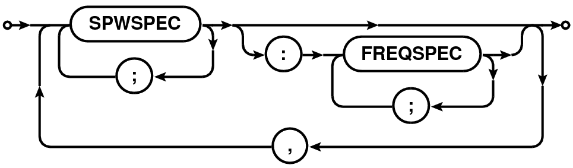
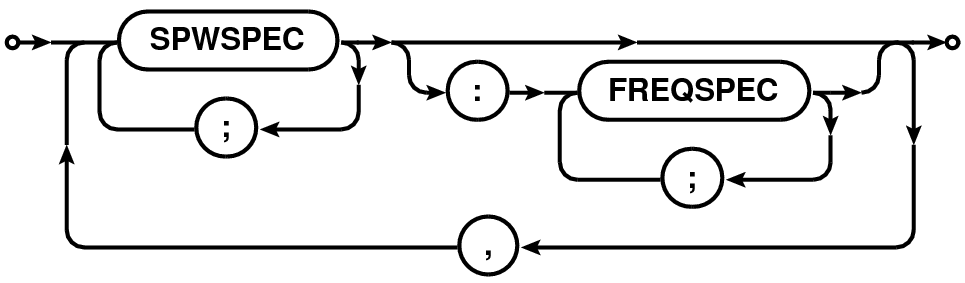

Table 6: Railroad diagrams for the syntax of full frequency selection expression.
| Syntax of | Railroad Diagram |
| SPWSPEC[:FREQSPEC] expression |  |
| SPWSPEC | |
| FREQSPEC | |
| RANGESPEC |  |
Abstract
This note describes the syntax for the various expressions for selecting data from the Measurement Set, implemented in the MSSelection2 module of CASACore. All expressions consist of a comma or semi-colon separated list of specifications. Except channel selection, the final product of parsing the expressions is a Table Expression Node (TEN) which can be used to construct a table with only the selected rows. Higher level global methods to return a selected table, given the user supplied expressions, are also provided as part of this module.
Error handling is done via the C++ exception handling mechanism. The exceptions thrown by the MSSelection module are of type MSSelectionError3 which is derived from AipsError class. The exceptions generated from each individual expression parser are further specializations of the MSSelectionError class. Application layer code therefore can have a finer level control on error handling. The module also support externally plug-able error handlers of type MSSelectionErrorHandler4. This allows application layer code to have control on the resolution mechanism of the exceptional states that may be reached during the parsing cycle.
The MSSelection module can also be used for other tables that follow the general data base design of the MeasurementSet. The CASA CalTables5 is an example which also uses the MSSelection module for data selection.
A MSSelection expression consists of a comma separated list of specifications. Specifications are typically strings or numbers. Strings and numbers can be mixed to form a single list. Elements of the list which can be converted to integers are treated as integer index specification. Elements which do not get parsed as numbers are treated as strings. Where appropriate, strings are matched against names. Depending upon the content of a string, it can be used as regular expressions or pattern. Where appropriate, physical quantities (numbers with appropriate units) can also be used.
A blank selection expression is interpreted as ”no selection to be applied to the MS”. Hence a blank expression effectively implies ”select all”.
Integers can be of any length (in terms of characters) and composed of the characters in the range 0-9. Where appropriate, negative values can be given using the ’-’ character. Floating point numbers can be in the standard format:
or in the mantissa-exponent format (e.g. 10.56e-1). If a floating point number is given where only integers are expected (e.g. indexes), the floating point value is truncated to the nearest integer.
Range of numbers (integers or real numbers) can be given in the format N0N1. Integer ranges are expanded into a list of integers starting from N0 (inclusive) to N1 (inclusive). Range of real numbers is used to select all values between N0 and N1 (including the boundaries). E.g.
Integer ranges:
Floating point ranges:
Wherever appropriate, units can be optionally specified. Values with units are converted to the units in the Measurement Set (which uses the MKS-system). For ranges, the units are specified only once (at the end) and it applies to both the range boundaries. E.g.
String matching can be done in three ways. Any component of a comma separated list that cannot be parsed as number/number range/physical quantity is treated as a regular expression or a literal string. If the string contains any of the ’*’, ’{’, ’}’ or ’?’ characters, it is treated as a pattern (a simplified form of regular expression). Otherwise it is treated as a literal string and used for exact matching. As a result, for most cases, the user does not need to supply any special delimiters for literal strings and/or regular or pattern matching expressions. However if it is required that the string be matched exclusively as a regular expression, it can be supplied within a pair of ’/’ as delimiters. A string enclosed within double quotes (’”’) is used exclusively for pattern matching (patterns are a simplified form of regular expressions - used in most UNIX commands for string matching). Patterns are internally converted to equivalent regular expressions before matching. Read elsewhere (e.g. use command ”info regex”, or visit this link6) for details of regular expression and patterns.
Strings can include any character except the following:
(these are reserved characters for MSSelection expression syntax). Strings that do not contain any of the characters used to construct regular expressions or patterns are used for exact matches. Although it is highly discouraged to have name in the database containing the above mentioned reserved characters, if one DOES choose to include the reserved characters are part of names etc., those names can only be matched against quoted strings (since regular expression and patterns are super-set of literal strings. I.e. literal string is a valid regular expression also). This leaves the list ’”’, ’*’, ’?’, ’{’ and ’}’ as the list of printable character that cannot be part of a name (i.e., a name containing this character can never be matched in a MSSelection expression). If a need is felt to include these as well, an escape mechanism can be included later (but I would prefer to enforce that at least these characters not be part of any name!). Following are some examples of strings/regular expressions/patterns:
In most cases, blanks are treated as white-spaces (i.e., insertion of blanks anywhere in the expression has no effect), except in the case of Field Selection Expressions (see Section 4). Blanks are allowed as part of the field names. Blanks around the delimiting characters (’,’ , ’;’ , ’&’ etc.) are ignored. For field names, blanks after the first valid name character and before the last valid name character are included as part of the name. Hence
Time selection expression is a comma separated list of time specifications. Time can be specified in the format YYYY/MM/DD/HH:MM:SS.FF. Fields (i.e., YYYY, MM, DD, HH, MM, SS and FF), starting from left to right, can be omitted. Omitted fields will be replaced by context sensitive defaults as explained below.
| Syntax of | Railroad Diagram |
| TIME Expression | |
| TIME-RANGE | |
Various forms of possible time-selection expression are listed below. T0, T1 and dT in the following description are time specifications.
Selects all time stamps which satisfy the following condition:
(TimeStamp = T0) and (TimeStamp = T1)
Fields missing in T0 are replaced by the fields in the time stamp of the first valid selected row in the MS. Fields missing in T1 are replaced by the corresponding fields of T0 (after its defaults are set).
The edges of the range is computed using the Exposure Time. All rows with a time stamp which satisfy the following condition are selected:
((TimeStamp
T0) or (abs(TimeStamp - T0)
ExposureTime/2)) and
((TimeStamp
T1) or (abs(TimeStamp - T1)
ExposureTime/2))
Fields missing in T0 are replaced by the fields in the time stamp of the first valid selected row in the MS. Fields missing in T1 are replaced by the corresponding fields of T0 (after its defaults are set).
Same as the previous expression with the edges of the range determined using the FLOATNUMBER (in seconds of time) instead of Exposure Time. All rows with a time stamp which satisfy the following condition are selected:
((TimeStamp
T0) or (abs(TimeStamp - T0)
FLOATNUMBER)) and
((TimeStamp
T1) or (abs(TimeStamp - T1)
FLOATNUMBER))
Fields missing in T0 are replaced by the fields in the time stamp of the first valid selected row in the MS. Fields missing in T1 are replaced by the corresponding fields of T0 (after its defaults are set).
All rows with time stamp that is within an integration time of T0 are selected. Integration time is determined from the first valid selected row (more rigorously, an average integration time should be computed). Default settings for the missing fields of T0 are as described in bullet (1) above.
All rows with time stamp starting from T0 and ending with time value given by T0+dT are selected. Defaults of T0 are set as usual described in bullet (1) above. Defaults for dT are set from the time corresponding to MJD=0. I.e. dT is an specification of length of time from nominal ”start of time” (the time stamp of the first valid selected row of the MS).
Selects all times greater than T0.
All rows with time stamp less than T0 are selected. Default settings for T0 are as above.
This expression is used to perform baseline based selections. Baseline can be specified as a pair of antenna specifications. Since antenna specification can itself be a list of antennas, the expression allows a rich selection syntax which is simple for simple selections.
ANT in the description below is a comma-separated list of antenna specifications. A baseline specification is an single ANT, ANT followed by an operator or a pair of ANT separated by an operator. A baseline expression is single baseline specification or a semi-colon separated list of baseline specifications.
The full antenna and baseline expression syntax is described in the Railroad Diagram format in Table 2 and explained in the following sections.
| Syntax of | Railroad Diagram |
| BASELINE Expression | |
| Antenna Expression | |
| (ANT-EXPR) | |
| Antenna/Station Spec. | |
| (ANTSPEC, STATIONSPEC) | |
An ANT can be given as a single string (section 1.4) (literal/pattern/regular expression), single integer ID, a range (section 1.2) of integer IDs or a comma separated list of integers. For VLA-specific reasons (see Section 3.2), only for antenna specifications, integers are first converted to strings and matched against the antenna names. E.g.
The precise logic applied to the antenna specification (ANT) is as follows:
A fully qualified antenna specification can also include the station name via the ANT@STATION syntax. STATION specification follows the same rules as antenna specification. When antenna or station in a ANT@STATION syntax is a comma-separated list, the list must be enclosed in a left- and right-parenthesis pair to distinguish it from a comma-separated list of ANT@STATION (i.e., "A1@S1, A2@S2, A3@S3" versus "(A1,A2,A3)@(S1,S2,S3)"). All antennas in the ANT part of the specification on any of the stations in the STATION part of the specification will be selected. The ANT part of the specification is optional and when not specified is replaced with the wild-card "⋆" (i.e. "@STATION" is equivalent to "⋆@STATION").
The two forms of specifications that are interpreted differently are:
First form is similar to the comma-separated list of antenna specifications used to construct the baseline to be selected (see Section 3.1.3). The latter will select all members of the antenna list that are on any of the stations listed in the station list. E.g. if antenna A1 appears on stations S1 and S3, both will be selected in the second form, but only the antenna A1 on station S1 will be selected in the first form. Note that the second form of specification can itself be a member of a comma-separated list.
A baseline specification consists of an ANT followed by an operator or a pair of antenna specifications separated by an operator. Operator can be one, two or three ampersands ('&'):
| The operator | Operation |
| & | Select only cross-correlation data |
| && | Select cross- and auto-correlation data |
| &&& | Select only auto-correlation data |
Possible forms of baseline specifications are tabulated in Table 4.
| Specification | Meaning |
| ANT | Select only cross-correlation baselines between all the |
| antennas in ANT and all other available antennas | |
| ANT& | Select only cross-correlation baselines between antennas |
| in ANT only | |
| ANT1 & ANT2 | Select only cross-correlation baselines between antennas |
| in ANT1 and ANT2 | |
| ANT&& | Select cross- and auto-correlation baselines between all |
| the antennas in ANT only | |
| ANT&&⋆ | Select cross- and auto-correlation baselines between all |
| the antennas in ANT and all other available antennas | |
| ANT1 && ANT2 | Select cross- and auto-correlation baselines between |
| antennas in ANT1 and ANT2 | |
| ANT&&& | Select only auto-correlation baselines for antennas in ANT |
| !ANT | Excludes all baselines involving antennas in ANT. ANT can be |
| any of the above expressions | |
| ANT1 ; !ANT2 | ANT1 and ANT2 can be any of the above expressions. This |
| selects only cross-correlation baselines between all the | |
| antennas in ANT1 and all other available antennas except | |
| those involving antennas in ANT2. | |
| A1@S1 | Select baselines with antenna A1 on station S1 only |
| (A1,A2)@(S1,S2) | Select baselines with antenna A1 on station S1 or S2 and |
| antenna A2 on station S1 or S2 | |
Formally, baseline specification is of the form [!]ANT[OP[ANT]] (where the parts in square brackets are optional and OP can be '&', '&&' or '&&&').
The negation operator '!' can be used to exclude a baseline specification from the final selection. The negation operator applies to the single expression only. Hence in a compound expression (collection of expressions separated by “;”), if a baseline specification is negated in one expression and included in a following expression, it will not be excluded from the selection. Note that this is a baseline negation operator and not an antenna negation operator. The negation operator applies only to the baseline specification immediately following it. E.g.,
Note that the negation operator cannot be applied to individual members of the antenna specification/antenna list. E.g. the expression "1,2,!5,8" is syntactically incorrect.
Since antenna names in a antenna/baseline selection can be a regular expression or a pattern, one can preceed a name, pattern or regex by “’̂’ (the regular expression negation operator) to negate that name. Thus
means all antennas except VLA:N⋆. Note that ̂VLA:N⋆ and !VLA:N⋆ are very different. The first one forms all cross-correlation baselines of the antenna in the remaining arms with all antenna (also VLA:N antenna). Thus ̂VLA:N⋆ is the same as VLA:[SE]⋆. The second one has all baselines between the antenna in the remaining arms, but also autocorr between VLA:N antenna.
In the most common usage, an atomic ANT selects all baselines containing all the antennas in ANT. ANT& selects only baselines between the list of antennas in the antenna specification. ANT1&ANT2 selects baselines between antennas in ANT1 and ANT2 only. E.g.
Following are more examples of baseline specification using ranges and names:
The full baseline selection expression is any of the examples shown above or a semi-colon-separated list of baseline specifications. E.g.
with each elements of the semi-colon separated list being interpreted as explained above.
Antenna naming convention for VLA is such that the antenna names are actually valid integers converted to strings. While we feel that this is indeed a bad idea and it will be best to translate the VLA antenna names to something like VLA1, VLA2 in the CASA VLA filler (or something that does reflect that its a name and not get confused with integer indexes), for now, to accommodate the VLA tradition, the following logic is used:
Just for antenna selection, a user supplied integer (or integer list) is converted to a string and matched against the antenna name. If that fails, the normal logic of using an integer as an integer and matching it with antenna index is done.
For example, if the antenna with index 17 is named ”21”, the string "21,VLA22" will expand into an antenna index list of 17,22 (assuming that the antenna named VLA22 has index 22).
If we conclude that this style of antenna selection is indeed the way we wish to go, users should be aware that the antenna selection will behave differently for telescopes other than VLA. For example, assuming that antenna with names ”21”,”17”, and ”11” have indices 1,2 and 3, for VLA only a selection string ”21,17,11” will select antenna with indices 1, 2 and 3. For other instruments where this is not the naming convention, the same selection string (”21,17,11”) will select antennas with indices 21, 17, and 11.
Field specifications can be literal field names, regular expressions or patterns. Leading and trailing blanks are stripped from the user supplied field specifications as well as from the entries of the NAME and field codes before being used for matching.
Since none of the following characters are used as part of the FIELD selection expressions, they can also be used as part of field names: ”;”, ”$”, ”%”, ”!”, ”@”, and ”#”7.
Fields for which the entry in the NAME column of the the FIELD sub-table match the literal field name/regular expression/pattern are selected. If a field name/regular expression/pattern fails to match any field name, the given name/regular expression/pattern are matched against the field code. If still no field is selected, an exception of type MSSelectionFieldParseError is thrown.
Field specifications can also be give by their integer IDs. IDs can be a single ID or a range (section 1.2) of IDs (N0N1). Field ID selection can also be done using a boolean expression. For a field specification of the form ”ID”, all field IDs greater than ID are selected. Similarly for ”ID” all field IDs smaller than ID are selected.
The field selection expression is a comma-separated list of field specifications. E.g.
The UV-distance expression can be used to select data that lines within a given range of uv radius. The syntax is described as a railroad diagram in Table 5 and explained in sections below.
| Syntax of | Railroad Diagram |
| UVDIST Expression | |
| UVDIST-UNIT | |
| UVDIST-PRECENT-EXPR | |
A uv-distance specification is given as a physical quantity (number with units in the format NUMBER[UNIT][:NUMBER%] where syntax in square brackets is optional). This is referred to as UVDIST in the description below. Units are optional with the default unit being meter. Units can be specified as ”m”/”M” (for Mega) or ”k”/”K” (for Kilo) followed by ”m”/”M” (for meter) or ”lambda”/”LAMBDA” (for wavelength). User supplied values are converted to internal Measurement Set units using the spectral window sensitive reference frequency.
If only a single UVDIST is specified, all rows that exactly match the given UVDIST are selected. When UVDIST is given as a range (section 1.2) in the format N0N1[UNIT] (where N0 and N1 are valid numbers), all rows corresponding to the uv-distance between N0 and N1 (N0 and N1 included) are selected.
Rows can also be selected via boolean expressions. When specified in the format ”UVDIST”, all rows with uv-distance greater than the given uv-distance (converted to the appropriate units) are selected. When specified in the format ”UVDIST”, all rows with uv-distance less than the given uv-distance (converted to the appropriate units) are selected.
The :NUMBER% syntax can be used to selected rows with uv-distance within an equal range on either side of a given range. All rows with uv-distance between N percent of the uv-range determined by the uv-distance expression in appropriate units are selected.
The full uv-distance selection expression is a comma-separated list of any of the above mentioned uv-distance specifications. E.g.
Frequency selection expression consists of two specifications separated by colon (’:’) in the form:
where SPW is the spectral window specification and FREQSPEC is the optional frequency specification for selection within the selected spectral windows. When channel specification is omitted, all channels of the selected SPW are selected.
SPWSPEC and FREQSPEC allow use of semi-colon separated lists. As a result, list of SPWSPEC can be given in two ways: (1) a semi-colon separated list, (2) coma separated list. This allows simple selections to remain simple and more complex selections consistent with the syntax for FREQSPEC list.
The full syntax is shown in the Railroad Diagram format in Table 6 and explained in the following sections.
| Syntax of | Railroad Diagram |
| SPWSPEC[:FREQSPEC] expression |  |
| SPWSPEC | |
| FREQSPEC | |
| RANGESPEC | |
Spectral windows (SPW) specification can be of the following types:
SPWSPEC can be single integer, a list or a range of integers. It can also be a list of boolean expressions involving IDs. E.g.
SPWSPEC can be a name or a list of names which will be matched against the NAME column of the SPECTRAL_WINDOW. The name can be a string for literal matching, or a regular expression or a pattern. All SPWs that match the given name will be selected. E.g.
SPWSPEC can also be constructed using the reference frequency of the SPWs. The reference frequency is defined as the average of the frequency corresponding to the first and the last channel for each SPW. A single frequency specification is used for exact match with the reference frequency. A range (section 1.2) of frequencies are used to select all SPWs with the reference frequencies within the given range. The allowed units are Hz, KHz, MHz, GHz or THz. E.g.
Channel specification8 (referred to as FREQSPEC in the following description) is a START, STOP, STEP tuple corresponding to the first frequency channel, the last frequency channel and the step size to increment from the first to the last channel. The START and STOP part of the tuple can be range (section 1.2) specification for the range [START, STOP] followed by an optional STEP size.
START and STOP part of the tuple can be specified as a single integer or physical quantity or as a range (section 1.2) of integers or physical quantities. A single integer is treated as a channel index and the tuple corresponds to [ID,ID,1]. A single physical quantity is matched with the exact frequency value of the channels and tuple of matched channel index is constructed as [ID,ID,1]. A range (section 1.2) of integers given as N0N1 is used to construct a tuple [N0,N1,1]. Similarly for a range of physical quantities.
If a START,STOP part of the tuple specification is followed by ”̂STEP”, the STEP is used as the third value of the tuple. STEP specification is a single integer or physical quantity. E.g. 010̂2 is converted to a START, STOP, STEP tuple [0,10,2].
A channel selection expression is a semi-colon separated list of channel specifications. E.g.
The specifications for SPW and channels can be combined to form a fully qualified frequency selection expression of the form SPWSPEC[:FREQSPEC] (square brackets indicate that :FREQSPEC is optional). A frequency selection expression is a comma-separated list of SPWSPEC[:FREQSPEC] specifications. Channel selections apply to all SPWs selected by the SPWSPEC on the left of ’:’. E.g.
selects
selects
Figure 1 shows an example frequency setup to motivate the need to separate the full frequency selection expression into SPWSPEC and FREQSPEC parts. SPW0 covers the frequency range 1.0–2.0 GHz with SPW1 overlapping in the range 1.6–1.7 GHz, with a reference frequency of 1.5 GHz and 1.65 GHz respectively. With independent specifications for SPW and channel selection, selection expressions can be constructed to select channels from SPW0 or SPW1 or from SPW0 and SPW1. E.g.
If a single channel specification is greater than the available outer limit, an exception is thrown. If it is less than zero, it is set to zero.
The structure of the Measurement Set allows independent set up for the frequency and polarization description of the data9. E.g., it is valid to have data at 1420MHz, with some fraction of the data recorded with only parallel hand polarizations (e.g. ”RR” and ”LL”) and some fraction of the data recorded in full polarization mode (e.g. ”RR”, ”LL”, ”RL”, and ”LR”). Note however that a polarization set up describes a spectral window and not the individual frequency channels in a spectral window.
Consequently, polarization selection expressions may need to be qualified with the spectral window and polarization ID specification as well. Therefore, current the polarization selection expressions are of the type [SPW:]POL10. The SPW part of such expressions follow the syntax of the Spectral Window Selection expression (see Section 5.1) – except that the channel specifications are not allowed here.
As with other expressions, the polarization selection expression also consists of comma separated list of full specifications. The separator for lists for the individual parts of the specification (i.e. SPW, POL, etc.) is semi-colon. However note that if the optional qualifiers are omitted (i.e., SPW etc.), either of the separators can be used (comma or semi-colon). Thus "RR;LL" is equivalent to "RR,LL".
The POL specification is a semi-colon separated list of polarization products (i.e., it is a baseline based selection). E.g. POL can be "RR" or "LL" or "RR;LR" or "RR;LL;LR;RL", etc. Without the qualifiers, comma can also be used as a separater. Polarization specifications in the list can be in any order. A number of [SPW:]POL specifications can be given as a comma separated list. E.g.
”Scan intent” selection is based on the entries in the "OBS_MODE" column of the "STATE" sub-table, as described in the Railroad diagram format in Table 7. The main table of a Measurement Set has the "STATE_ID" column containing the row number of the "STATE" sub-table appropriate for each row in the main table. The "OBS_MODE" column of the STATE sub-table contains strings describing the observational intent. These intents are referred to as ”scan intents” and the scan-intent expressions in the MSSelection module can be used for data selection based on these intents.
| Syntax of | Railroad Diagram |
| Scan Intent expresssion | |
The scan-intent selection expression is a comma-separated list of specifications. Each specification can be a string (section 1.4) , an integer or an integer range (section 1.2). As in other such expressions, a range can be specified as N0N1 (see Section 1.2). String (section 1.4) can be regular expressions or patterns or quoted-strings for as-is matching (see Section 1.4).
A single scan can have multiple scan-intents represented by a comma-separated list of strings like "CALIBRATE_BANDPASS.UNSPECIFIED,CALIBRATE_AMPLI.UNSPECIFIED". Each of these comma-separated components are referred to as the scan-intent components. All string specifications in scan-intent expression are matched against each of these comma-separated components. Scans with any of the scan-intent components matching the string(s) in the scan-intent expression are selected. E.g. scanintent=⋆CAL⋆, ⋆BAND⋆ will select all scans which have the strings "CAL" or "BAND".
To allow selection based on scan-intent components, scan-intent selection specifications can also be ampersand-separated ('&') list strings. Only those scans, at least one scan-intent components of which match all the ampersand-separated components are selected. E.g. scanintent=⋆CAL⋆ & ⋆BAND⋆ will select only those scans the intent strings of which contain the strings "CAL" and "BAND". See Section 8.2 for more examples.
Table 8 shows an example-table of scan-intents. Table 9 shows a list of some scan-intent selection expressions and the corresponding list of selected scan numbers from Table 8.
| Scan No. | Scan-intent strings |
| 0 | CALIBRATE_BANDPASS, CALIBRATE_PHASE |
| 1 | CALIBRATE_BANDPASS, CALIBRATE_AMPLI |
| 2 | CALIBRATE_BANDPASS, CALIBRATE_AMPLI, CALIBRATE_PHASE |
| 3 | AMPLI_UNSPECIFIED, PHASE_UNSPECIFIED |
| Scan-intent | Selected | Remarks |
| selection expression | scans | |
| CALI⋆ | 0,1,2 | |
| ⋆PHASE | 0,2 | Matches CALIBRATE_PHASE but |
| not PHASE_UNSPECIFIED | ||
| ⋆UNSPEC⋆ | 3 | |
| ⋆AMPLI, ⋆PHASE | 1,2 | ⋆AMPLI matches CALIBRATE_AMPLI; |
| ⋆PHASE matches CALIBRATE_PHASE | ||
| ⋆AMP⋆ | 1,2,3 | ⋆AMP⋆ matches CALIBRATE_AMPLI and |
| AMPLI_UNSPECIFIED | ||
| ⋆BAND & ⋆PHASE | 0,2 | ⋆BAND and ⋆PHASE are simultaneous present |
| for scans 0 and 2 only | ||
| AMP⋆ & ⋆PHASE⋆ | 3 | ⋆PHASE⋆ matches scans 0,2,3. AMP⋆ matches |
| only scan 3. | ||
| ⋆BAND & ⋆PHASE⋆ & ⋆AMP⋆ | 2 | Only scan that matches ⋆BAND and |
| ⋆PHASE⋆ and ⋆AMP⋆ is scan 2 | ||
| ⋆BAND & ⋆PHASE⋆, AMPLI⋆ | 0,2,3 | ⋆BAND & ⋆PHASE selects scans 0,2. |
| AMPLI⋆ selects scan 3 | ||
Scan and sub-arrays selections are purely integer ID based selections. The syntax for the specification of both these is therefore identical.
Scan and Sub-array selection specification is a single integer (INT) or a range (section 1.2) of integers(N0N1). Scans and sub-arrays can also be selected via boolean expressions of the type ”INT”, ”=INT”, ”INT” or ”=INT”11.
Full expression is a comma-separated list of any of the above index specifications. E.g.
The MSSelection module can be thought of as a compiler which compiles expressions written in MSSelection syntax into TaQL code. The module therefore can also be supplied pure-TaQL expressions which are used as-is along with any of the MSSelection expressions. Internally, the pure-TaQL expression will be treated as just another MSSelection expression.
While it is natual to be able to use TaQL expressions via the MSSelection module for selection on an MS, it is also possible to embed MSSelection expressions in TaQL expressions via the MSCal user-defined functions (UDF). E.g. in a TaQL expression like the following
sel1 and sel2 can be MSSelection baseline (section 3). Other types of selection are also similarly possible (e.g. selection on Time, Frequency, Scan, etc.) via TaQL.
The MSSelection sub-system reports errors via the C++ exception mechanism. MSSelectionError12 is the base class of the objects used to report exceptions. The class diagram for the objects thrown is shown in Fig. 2.
All parsing errors are reported by throwing the MSSelection{Time, Spw, Field, UvDist, Antenna, Scan, Subarray,Poln,State}ParseError exception. All other forms of errors (e.g. illegal range (section 1.2) specification N0N1 where N0 N1) are reported by throwing an exception of type MSSelection{Time, Spw, Field, UvDist, Antenna, Scan, Subarray,Poln,State}Error.
Hence, to catch all errors thrown from the MSSelection sub-system, catch the MSSelectionError object. For more specific exception handling, catch the more qualified MSSelection*Error objects. For catching only parsing errors, catch the MSSelection*ParseError object. As is obvious, any un-caught exception from the MSSelection sub-system will be caught in the AipsError catch block.
The exceptional error message consists of a human understandable one-line description of the error, the string which caused the error and the possible location in the string of the erroneous character. E.g.
The normal (default) behavior of the parsers is to throw an exception when an error is encountered during parsing cycle or in the rule-resolution code. However there are cases where instead of throwing an exception, the errors must be collected as they occur and resolution of the error done at the end of the parsing cycle. In the MSSelection module, this is achieved by installing an error handler object of type MSSelectionErrorHandler13(the base-class) in the instance of the MSSelection object. This is the object that is used internally to handle errors in the MSSelection module. The default error handler that comes pre-installed simply throws an exception of the appropriate kind when an error is encountered, recreating the normal behaviour of the C++ exception handling mechanism.
To collect errors (and the error messages generated in the process) as they occur for later resolution, the client-side code can install a specialization of the error handler of type MSSelectionLogError, a derivative of the MSSelectionErrorHandler, using the MSSelection::setErrorHandler() method, as shown in the Listing 1.
At the appropriate place in the client code, a call to MSSelectionErrorHandler::reportError() can be made to display the collected error messages as warning messages. This behavior can be changed in a specialization of the MSSelectionErrorHandler class by overloading the reportError method.
This mechanism of error handling is currently available for ANTENNA and STATE (a.k.a. “intent selection”) selection expressions only.
The MSSelection module was originally written to provide a higher-level, simpler language called STaQL (Simpler TaQL) specifically for applying selection on Measurement Sets. Parsers in the MSSelection module compile the various STaQL expressions and emit the equivalent tree of Table Expression Nodes (TEN), which is then used by the MeasurementSet class to generate a selected Table containing rows from the original Table for which the supplied TEN evaluates to True.
The information required to compile the STaQL expressions is derived from various sub-tables of the Measurement Set format (e.g. the ANTENNA sub-table, SPECTRAL_WINDOW sub-table, etc.). Since the MeasurementSet class is a specialization of the Table class and uses the services of the Table class to do the selection, in principle, STaQL can be used for any database that follows the general Table structure of the Measurement Set format. We refer to classes/objects which provide such a view of the underlying data as MS-like objects/classes. To use the MSSelection module for selection, the basic requirement is that the MS-like formats be organized as pseudo-relational database (like the Measurement Set) where most of the main-table entries are references to the rows of sub-tables. The information that these main-table entries represent resides in these much smaller sub-tables.
Since there may be minor differences in the details of the target databases (e.g. names of the sub-tables, or even absence of some required sub-tables which can be generated on-the-fly), the MSSelection module provides an interface to the database via a translation class inherited from the pure-virtual base-class of type MSSelectableTable14. The MSSelectableTable class provides a uniform interface for the MSSelection class(es) and does any required translation to interface with the database classes. This also allows the client database related classes to exist outside the CASACore package. The inheritance tree of the MSSelectableTable line of classes is shown in Fig. 3.
For using the MSSelection module on the Measurement Sets, the MSInterface object can be constructed from the MeasurementSet object and passed to the MSSelection object as shown in Listing 2.
Another method of using the MSSelection class is to set the individual expressions, get the TEN via the MSSelection::toTableExprNode() method and finally use the global method getSelectedTable() to apply the selection. This style of usage is shown in Listing 3. While for Measurement Sets the MSSelection::reset() method also works with MeasurementSet object, for future compatibility reasons it is recommended that the MSInterface be used instead.
The MSSelection module can be used for selection on CalTables15 , which are implemented in the synthesis module of the CASA package, via the interface object of type CTInterface.
To use the MSSelection module for selection on (New)CalTable object, the only difference from the code snippet above, is that a CTInterface object needs to be constructed (instead of the MSInterface object) from the (New)CalTable class of the synthesis module. The CTInterface object can be supplied to the MSSelection object via the reset() method. Alternatively, various expressions can be set in the MSSelection object and the CTInterface object supplied via the MSSelection::toTableExprNode() method which returns the tree of TENs. The tree can then be used to get a selected CalTable as shown in Listing 3.
| FIELDID | SPWID | NChan | Pol | NRows | Source Name |
| 0 | 0 | 127 | RR | 10260 | 0530+135 |
| 1 | 0 | 127 | RR | 779139 | 05582+16320 |
| 2 | 0 | 127 | RR | 296190 | 05309+13319 |
| 3 | 0 | 127 | RR | 58266 | 0319+415 |
| 4 | 0 | 127 | RR | 32994 | 1331+305 |
| 5 | 1,2 | 1 | RR,RL,LL,RR | 23166 | KTIP |
1http://www.aoc.nrao.edu/sbhatnag/misc/msselection.pdf
2http://casa.nrao.edu/active/docs/doxygen/html/classcasa_1_1MSSelection.html
3http://casa.nrao.edu/active/docs/doxygen/html/classcasa_1_1MSSelectionError.html
4http://casa.nrao.edu/active/docs/doxygen/html/classcasa_1_1MSSelectionErrorHandler.html
5http://casa.nrao.edu/active/docs/doxygen/html/classcasa_1_1CalTable.html
6http://www.regular-expressions.info
7In case users loose their patience with the NRAO Observation Preparation Tool (NRAO OPT) and start giving field names like “@#!$%;”, to them we can say “...we understand.” �
8The MSSelection module is currently used to only parse the channel selection expression to produce the START,STOP,STEP tuples. No channel based selection is actually applied to the data. The list of tuples per SPW is passed to the application program layer and the interpretation of the tuples for actual selection depends on the application programmer.
9The combined main-table descriptor for spectral windows and polarization is the Data Description ID (DDID). DDID represents a two-level indirection based on the the Spectral Window and Polarization sub-tables (which are the real astrophysically relevant parameters of the database).
10A full specification of the type [[POLID:][SPWID:]POL or [DDID::]POL will be implemented in future.
11Programmers note: The getScanList() (getSubArrayList() for sub-arrays) method will return the list generated from INT,INT,... or INTINT or ”INT” specification. For ”INT” specification, the returned list will be number from INT part of ”INT” up to the maxScans (maxArrays for sub-arrays) set via MSSelection::setMaxScan() (MSSelection::setMaxArray() for sub-arrays). The default value of maxScans/maxArrays is std::standard_limitsint::max() (i.e. the maximum value an integer can take on a machine). It is done this way since there is no efficient way of generating a list of SCAN/ARRAY IDs present in the data and ”INT” is an unbounded list of integers. The list of scans IDs in the data can be probably generated using the MSRange class - but I think it can be quite expensive. So if it is necessary to know the precise list of scans selected using the ”INT” specification, the application programs will have to use MSRange class to get the range in the data. An intersection of the list from MSRange and the list from MSSelection.getScanList() will be the actual selected scans (intersection of two CASA vectors can be done using the set_intersection() global method in MSSelectionTools.h).
12http://casa.nrao.edu/active/docs/doxygen/html/classcasa_1_1MSSelectionError.html
13http://casa.nrao.edu/active/docs/doxygen/html/classcasa_1_1MSSelectionErrorHandler.html
14http://casa.nrao.edu/active/docs/doxygen/html/classcasa_1_1MSSelectableTable.html
15http://casa.nrao.edu/active/docs/doxygen/html/classcasa_1_1CalTable.html